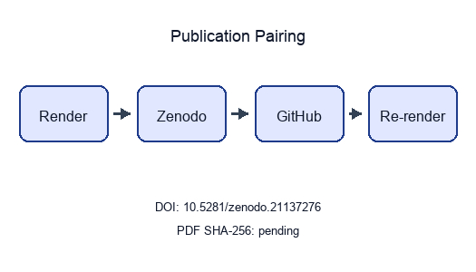
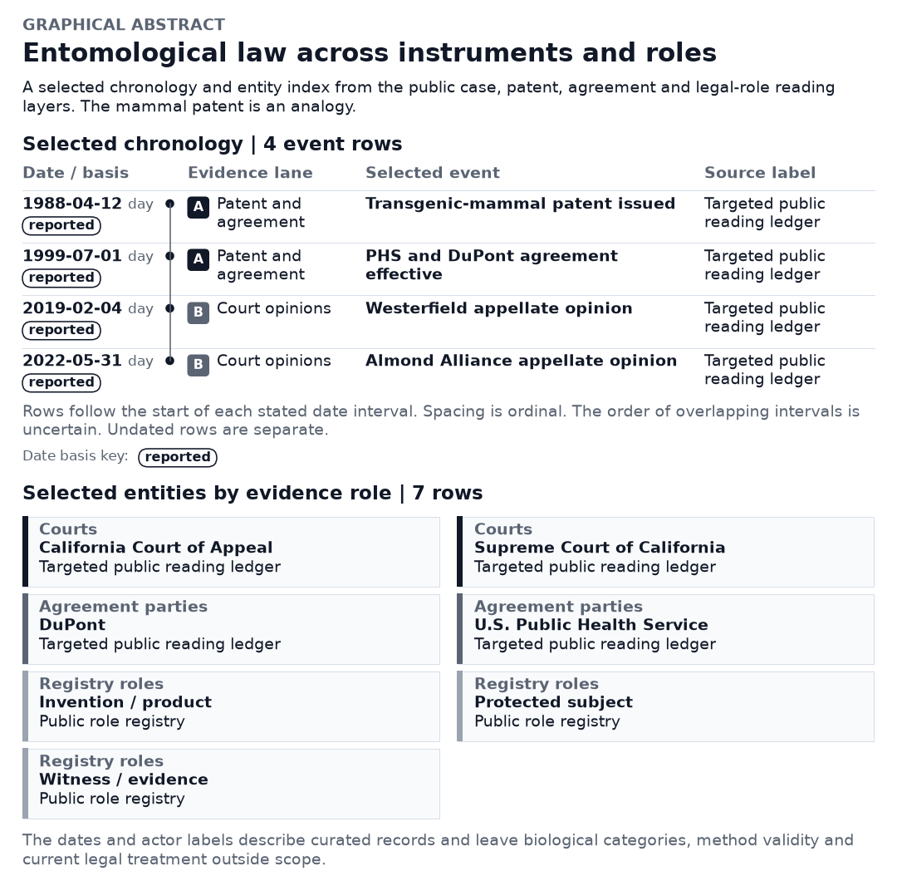
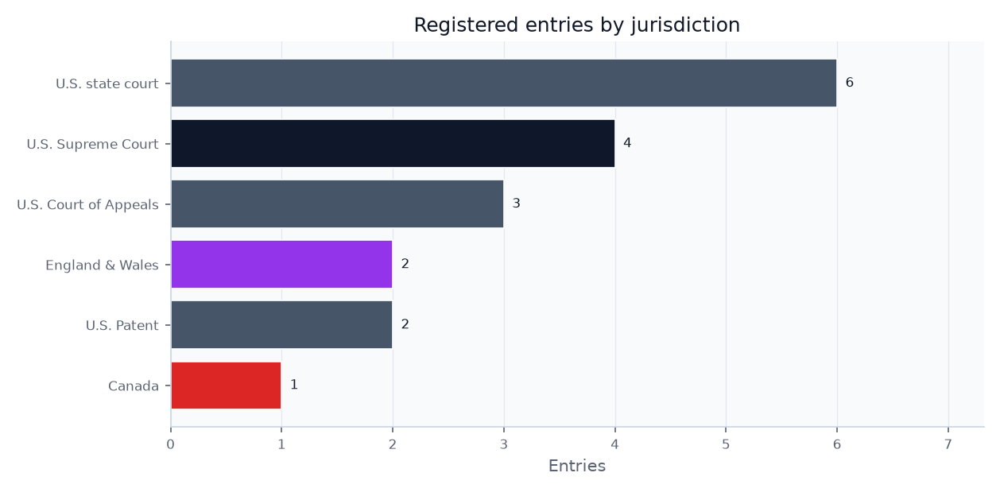
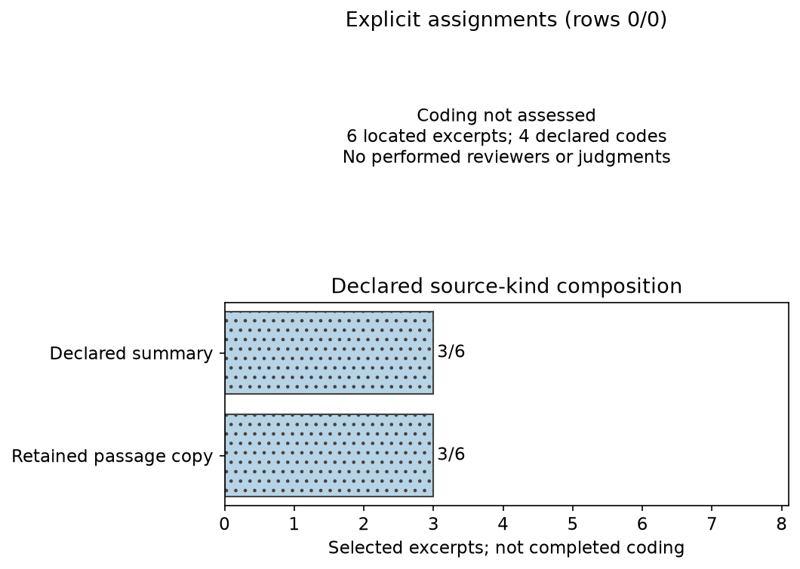
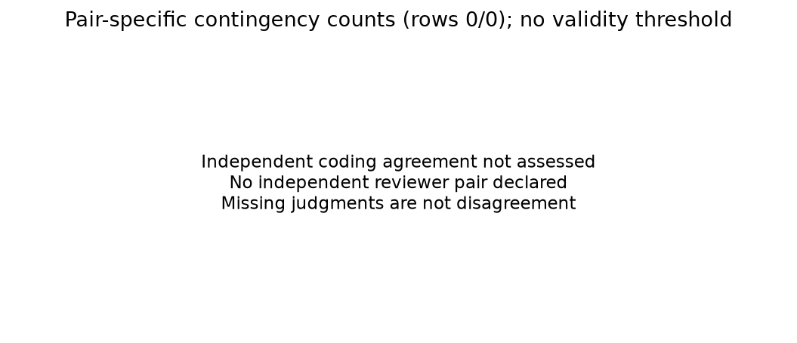

State: unpublished / pending pairing
Pairing: pending — unresolved: - ✗ GitHub release
URL: pending - ✗ PDF SHA-256: pending
| Field | Value |
|---|---|
| Title | Entomological Law |
| Version | 1.0.0 |
| Concept DOI | 10.5281/zenodo.21137276 |
| GitHub | docxology/EntoLaw |
| Zenodo | https://zenodo.org/records/21137276 |
| SHA-256 | pending |
| SHA-512 | pending |
- Scan Integrity QR and compare the embedded SHA-256 prefix to the table above.
- Scan Zenodo / GitHub QR codes and confirm they resolve to this release pairing.
- Full hashes and structured fields:
../data/transmission_manifest.json.
Structured manifest:
../data/transmission_manifest.json

1 Abstract: A Source-Anchored Map of Entomological Law
There is no statute, treatise, or law-school casebook titled
“Entomological Law.” The phrase names a synthetic field — the
convergence zone where the six-legged world repeatedly forces the legal
system to answer questions it was not designed for: Can a fly
testify? Who owns a swarm? Is a bumblebee a fish? Can you patent a
mosquito? May a court excommunicate a weevil? Does a cricket suffer? May
insects be used in war? This reference compiles that field as a
machine-readable and reproducible artifact organized around the legal
role an insect occupies in a given dispute. It encodes 8 legal
roles — witness, regulated threat, protected subject, property,
invention, defendant, moral patient, and weapon — and binds to them 18
curated case and patent entries, 43 statutes and treaties across 9
categories and 10 jurisdictions, 24 insect taxa, 13 certifying and
regulatory institutions, 44 historical milestones spanning 3676 years,
and 5 cross-domain themes that knit the roles together. Every count in
this prose is generated from the source registries under
src/, legal propositions are source-bound in the
bibliography, every externally-sourced statistic written as a numeral is
bound to a verification record in the claim ledger, and every figure
caption is emitted from a source-owned caption registry. The result is
both a map of a genuinely transdisciplinary field and a reproducibility
contract: the same version-controlled inputs regenerate the inventories,
validation report, analytical figures, manuscript variables, and paper
while preserving explicit caveats about registry scope, jurisdictional
reach, and the boundary between what the offline gates prove and what
only a live source check can confirm.
2 Graphical abstract

Entomological law across instruments and roles
A selected chronology and entity index from the public case, patent, agreement and legal-role reading layers. The mammal patent is an analogy.
Selected chronology (4 event rows)
- 1988-04-12 (day, reported) — Patent and agreement — Transgenic-mammal patent issued — source Targeted public reading ledger.
- 1999-07-01 (day, reported) — Patent and agreement — PHS and DuPont agreement effective — source Targeted public reading ledger.
- 2019-02-04 (day, reported) — Court opinions — Westerfield appellate opinion — source Targeted public reading ledger.
- 2022-05-31 (day, reported) — Court opinions — Almond Alliance appellate opinion — source Targeted public reading ledger.
Rows follow the start of each stated date interval. Spacing is ordinal. The order of overlapping intervals is uncertain. Undated rows are separate.
Selected entities by evidence role (7 rows)
- Courts — California Court of Appeal — source Targeted public reading ledger.
- Courts — Supreme Court of California — source Targeted public reading ledger.
- Agreement parties — DuPont — source Targeted public reading ledger.
- Agreement parties — U.S. Public Health Service — source Targeted public reading ledger.
- Registry roles — Invention / product — source Public role registry.
- Registry roles — Protected subject — source Public role registry.
- Registry roles — Witness / evidence — source Public role registry.
The dates and actor labels describe curated records and leave biological categories, method validity and current legal treatment outside scope.
3 Mapping Entomological Law: Roles, Evidence, and Limits
“Entomological law” — or, from the other direction, “legal entomology” — is not a single discipline but a multi-domain complex in which insects and their biology touch legal norms at dozens of points. A bibliometric analysis of the research literature found that “forensic entomology” and “legal entomology” are used interchangeably and span well over a thousand articles across more than a hundred contributing countries (Magaña et al. 2019). This reference treats the field in a broad sense: domains in which insects become objects or instruments of legal regulation.
Recent animal-law scholarship now names “insect law” directly, but this reference uses “entomological law” to keep the lens wider than animal-welfare doctrine: the same organism may enter evidence, quarantine, conservation, food, biotechnology, and weapons law before moral status is even at issue (Reddy 2025).
The deeper connective problem is that courts and agencies repeatedly need insect biology to become what science-and-law scholarship calls a serviceable truth: reliable enough for action, bounded enough to expose uncertainty, and explicit enough to be revisited when the evidence changes (Jasanoff 2015). Forensic entomology translates larval development into time; quarantine law translates ecological risk into movement controls; conservation law translates population decline into listing decisions; welfare law translates sentience evidence into moral and statutory thresholds. The same epistemic move recurs across the field.
The second connective problem is classification. Classification systems are not neutral filing cabinets: they allocate visibility, responsibility, and institutional action (Bowker and Star 1999). Insects reveal that point with unusual force because they move across ordinary legal boundaries so easily. A fly can be an expert’s clock, a statutory animal, a constitutional hook, or a nuisance depending on which classificatory gate opens first. The field therefore also depends on boundary-work: courts and agencies must decide when entomology is sufficiently scientific for evidence, sufficiently uncertain for precaution, sufficiently economic for trade restrictions, or sufficiently moral for welfare concern (Gieryn 1983; Jasanoff 2004).
3.1 The role model: what law needs insects to be
The field has no master statute and no single agency, yet it coheres. Its organizing principle is the legal status the insect occupies in a given dispute. The same organism is, in turn, a witness, a regulated threat, a protected subject, property, an invention, a defendant, a moral patient, or a weapon — and each role poses a question the legal system was not built to answer. The 8 roles, their domains, and their core questions are listed below and visualized with their registry evidence in the roles-overview figure.
| Legal role of the insect | Domain | Core question |
|---|---|---|
| Witness / evidence | Forensic entomology | When did death occur, and where? |
| Regulated threat | Quarantine & invasive-species law | May this organism cross a border? |
| Protected subject | Conservation / endangered-species law | Does the state owe this species survival? |
| Property | Common law of wild animals | Who owns this swarm, hive, or specimen? |
| Invention / product | IP, biotech & food law | Can this insect be patented, engineered, or eaten? |
| Defendant | Historical animal trials | Can a pest be tried and punished? |
| Moral patient | Emerging welfare & sentience law | Can an insect be wronged? |
| Weapon | International humanitarian law & biosecurity | May insects be used in war? |
![Figure 2: The 8 registered legal roles an insect can occupy in this release, with the case, statute, species, and milestone evidence encoded for each. Read as: the field is not one doctrine but a set of recurring legal positions that biology can trigger. Why it matters: the figure sets the manuscript’s organizing grammar before the doctrinal sections specialize it. Provenance: src/roles.py and src.metrics.role_coverage_matrix(). Caveat: counts describe the encoded registries, not the entirety of each legal sub-field.](../figures/roles_overview.png)
src/roles.py and
src.metrics.role_coverage_matrix(). Caveat: counts describe
the encoded registries, not the entirety of each legal
sub-field.3.2 How the roles cohere: a preview
The 8 roles above are not silos; the registry also encodes 5 recurring themes that cut across them, and that synthesis is worth seeing before the per-role sections rather than only after them. The network below previews the connective tissue sec. 12 unpacks in full: it is the map the rest of this reference keeps returning to, so it is placed here as an orientation figure rather than left to surface only at the end.
![Figure 3: Network of the 5 recurring themes that link the legal roles — the definitional problem, the expert-testimony bridge, the biotechnology pivot, the property/conservation mirror, and the ancient/modern rhyme. Edge bundles share a theme colour. Read as: category changes, not species names, are what move a dispute from one legal regime into another. Provenance: src/interconnections.py. Why it matters: the synthesis depends on transfers among categories rather than parallel lists of topics. Caveat: the graph encodes declared thematic links, not statistical association.](../figures/role_interconnections.png)
src/interconnections.py. Why it matters: the synthesis
depends on transfers among categories rather than parallel lists of
topics. Caveat: the graph encodes declared thematic links, not
statistical association.3.3 Why the registry comes first
A typical survey of this material mixes prose summaries of statutes
with anecdotes of famous cases; both rot quickly as section numbers are
recodified and holdings are distinguished. This reference inverts that
pattern. Every legal role, case, statute, taxon, institution, and
milestone cited in the prose comes from a Python registry under
src/, and every count — “18 cases”, “43 statutes”, “24
taxa” — is a double-brace token resolved at build time by
src.manuscript_variables.generate_variables. The discipline
this enforces is the same reproducibility model the wider template uses:
a count that drifts from its registry cannot reach a green PDF without
the manuscript-token closure test flipping red first (sec. 13).
3.4 A legal history from bee swarms to gene drives
The field is old in more than one way. Its property lineage now reaches back before Rome: the Hittite Laws tariff stolen bees and bee hives, Mishnah Bava Batra treats bees as both beehive property and neighbor-law risk, and Roman law then turns swarms into the classic problem of wildness, sight, and pursuit (Hittite Kingdom 1650 BC; Mishnah 200 ADa, 200 ADb; Justinian 533 ADb, 533 ADa). That lineage also passes through successor-kingdom and East Slavic tariff law: the Salic Law makes stolen bees a named theft subject, Rothari’s Lombard code distinguishes an apiary vessel from bees taken out of a marked tree, and Ruskaia Pravda protects bort signs, bee trees, and removed bees as legally priced forest-apiculture injuries (Salian Franks 507 AD; Lombard Kingdom 643 AD; Kievan Rus’ Princely Law 1050). Muscovite law then makes the valuation still more granular: the 1649 Sobornoe Ulozhenie separately prices bee trees with and without bees, removed colonies, stolen hives, and deliberate destruction (Tsardom of Russia 1649). Medieval English restatements such as Fleta then carry the occupation problem forward, while the evidentiary lineage begins with the 1235 Sickle Murder recounted by Song Ci in The Washing Away of Wrongs (1247), where flies settling on an apparently clean blade exposed invisible blood and forced a confession; the claim is bound here both to a Library of Congress record for the Chinese text and to McKnight’s scholarly English translation (Fleta 1290; Ci 1247, 1981). Its product-law lineage is old as well: early colonial instruments treated mulberries, silk inputs, silks, and wax as objects of public economic policy rather than merely private agricultural choices (Virginia General Assembly 1619; Charles II 1663). A Russian and Russian-Imperial threat-law lineage also begins before professional society infrastructure: a 1749 Senate decree made locust extermination a provincial administrative duty, Pallas’s 1781 Icones Insectorum made insects of Russia and Siberia a taxonomic object, and later the chartered Russian Entomological Society, Keppen’s harmful-insect compendium, and Danilevsky’s phylloxera commission report show insect expertise entering administrative governance before modern plant-health law (Governing Senate of the Russian Empire 1749; Pallas 1781; Russian Entomological Society 1864; Keppen 1881; Danilevsky 1882). From there the registry traces 44 milestones across 3676 years — bee property, medieval animal trials, colonial silk policy, succession-based time-of-death estimation, eighteenth- and nineteenth-century pest administration, twentieth-century conservation and biotechnology statutes, and twenty-first-century sentience and gene-drive debates shown in the timeline figure.
![Figure 4: Selected milestones of entomological law across the 3676-year span the registry encodes, from early bee-theft and bee-property rules to the 2026 monarch-listing suit, coloured by legal role. Read as: old evidentiary and property problems keep reappearing inside new biotechnology, welfare, and conservation disputes. Why it matters: the chronology shows recurrence rather than novelty as the field’s basic pattern. Provenance: src/timeline.py. Caveat: a selected chronology, not a comprehensive history.](../figures/timeline.png)
src/timeline.py. Caveat: a selected chronology, not a
comprehensive history.The same arc appears twice in this reference, for two different reasons. The timeline above shows the milestones the law itself created; the figure below shows the sources that document them — every bibliography entry with a parseable date, not just the ones that became milestones. Reading the two side by side up front makes an honesty point before any doctrinal argument starts: the evidence base is not a thin modern layer with a few decorative antiquities, it has real pre-modern depth, and sec. 13 explains exactly how that bibliography is validated.
![Figure 5: Date distribution for every bibliography entry with a parseable year, split into broad bands and individual source-date strips with pre-1700 and 1700-1999 layers separated from the 2000+ consolidation, including labelled pre-1800 Rus’, Muscovite, and Russian-Imperial legal/scientific sources plus pre-1950 Russian and Soviet entomology/legal sources. Read as: EntoLaw’s evidence base is anchored by early legal, regulatory, and treatise sources but interpreted through modern scholarship, cases, statutes, and official materials. Why it matters: the figure makes the historical depth of the citation stack visible instead of leaving it implicit in the reference list. Provenance: docs/manuscript/references.bib parsed by legal_informatics.viz_citation_dates. Caveat: the date is the bibliography year, so modern editions appear at edition date unless the bibliography declares a source-date anchor. The PHS-DuPont memorandum has no stated publication year; it stays n.d. in the bibliography and is not placed on the date axis.](../figures/citation_dates.png)
docs/manuscript/references.bib parsed by
legal_informatics.viz_citation_dates. Caveat: the date is
the bibliography year, so modern editions appear at edition date unless
the bibliography declares a source-date anchor. The PHS-DuPont
memorandum has no stated publication year; it stays n.d. in the
bibliography and is not placed on the date axis.3.5 Boundaries of the field map
This reference is a map, not a treatise. The registries are curated to anchor each role with its leading authorities, not to enumerate every decision, instrument, or species; the figures throughout describe the encoded registries, and their captions state that scope explicitly. Sections sec. 4 through sec. 11 treat each role in turn; sec. 12 revisits the synthesis figure above in full, theme by theme; and sec. 13 documents the reproducibility contract, the claim ledger, and the honesty boundary behind the citation-date figure above.
4 The Insect as Witness: Forensic Entomology in Court
Forensic entomology is the oldest evidentiary and most legally mature corner of the field: the use of arthropod evidence — chiefly necrophagous blow flies (Calliphoridae) colonizing remains — to estimate the post-mortem interval (PMI), detect corpse movement, prove neglect, and recover toxicology from larvae. Of the 8 legal roles, the witness role is the most case-driven: 5 of the roles carry modern reporter case law, and the witness role alone accounts for 6 of the 18 registered case and patent entries, as shown in the case-by-role and jurisdiction figures.

src/cases.py via src.metrics. Caveat: an empty
role is no evidence that relevant law or records do not
exist.
src/cases.py. Caveat: the selected frame
supplies neither an exhaustive doctrinal census nor a uniform
judicial-holding denominator.4.1 From larvae to minimum postmortem interval
Entomologists generally calculate a minimum PMI — the time since first colonization — using accumulated degree-days, summing temperature above a developmental threshold and matching it to species-specific growth tables. For older remains they fall back on the succession model of arthropod waves first systematized by Jean-Pierre Mégnin in La Faune des Cadavres (Mégnin 1894). Catts and Goff’s 1992 review marks the pre-Daubert professionalization point: forensic entomology was already being synthesized as a legal-scientific field around PMI, succession, collection, environmental temperature, and casework limits before reliability gatekeeping became the modern evidentiary idiom (Catts and Goff 1992). A sub-branch, entomotoxicology, recovers drugs and metals from maggots when blood and tissue are gone — substances that themselves distort larval growth and so must be accounted for in the estimate. The foundational legal text remains Greenberg and Kunich’s Entomology and the Law, written expressly to prepare both the entomologist and the trial lawyer for the courtroom (Greenberg and Kunich 2004).
4.2 Admissibility: Frye, Daubert, and Rule 702
Insect testimony enters US courts through the same gates as all scientific evidence. Under Frye the technique must be “generally accepted” in its field (D.C. Circuit 1923; Cornell Legal Information Institute 2024b); under Daubert the trial judge is a reliability gatekeeper weighing testability, peer review, error rate, acceptance, and fit (U.S. Supreme Court 1993); and Kumho Tire extends that inquiry to all expert testimony (U.S. Supreme Court 1999). Federal Rule of Evidence 702 codifies the requirement that reliable principles be reliably applied to the facts (Cornell Legal Information Institute 2024a). That chronology matters: the pre-2000 source base shows a discipline with articulated methods before the courtroom asked the Daubert question, so the recurrent dispute is not whether insect succession can ever be law-relevant but whether the expert controlled the biological assumptions in the case at hand. In the reported authorities encoded here, disputes focus less on excluding forensic entomology wholesale than on application — wrong geographic dataset, microsite temperature error, species misidentification — and whether reliable principles were reliably applied to the case facts.
4.3 Cases where insect evidence mattered
The registry pins the field’s evidentiary arc from the 1235 Sickle Murder forward. Bergeret’s original Annales d’hygiène publique et de médecine légale report is the Western hinge: he treated pupae, larvae, and metamorphosis as medico-legal evidence for a mummified newborn’s time of death, making insect development part of a judicial fact pattern rather than a natural-history aside (Bergeret 1855). Mégnin then systematized the succession model in a dedicated forensic monograph before modern expert-evidence doctrine existed (Mégnin 1894). The modern arc runs through the Buck Ruxton “Jigsaw Murders” that produced the first UK conviction by entomology (Natural History Museum 2023), the Pennsylvania Supreme Court’s affirmation of PMI testimony in Commonwealth v. Auker (Supreme Court of Pennsylvania 1996), the Canadian R. v. Truscott reversal decades after conviction (Court of Appeal for Ontario 2007), and the Kirstin Lobato exoneration built on the telling absence of blowfly colonization, which proved death after dark (Innocence Project 2018). The targeted opening of People v. Westerfield records affirmance and the defense’s reliance on entomological evidence; it does not establish how the jury weighed competing experts (Supreme Court of California 2019). A claim about juror reasoning requires evidence beyond the appellate disposition.
4.4 Standards, certifiers, and error controls
Certification in North America runs through the American Board of Forensic Entomology (ABFE) (American Board of Forensic Entomology 2024). The registry encodes 4 forensic-entomology institutions, including the ABFE, the European Association for Forensic Entomology (EAFE), the North American Forensic Entomology Association (NAFEA), and the National Institute of Standards and Technology (NIST) Organization of Scientific Area Committees (OSAC) task group. The National Research Council’s 2009 report discusses the scientific basis of forensic methods, validation and performance, error assessment, peer review and bias (National Research Council 2009). The targeted publisher extracts support those methodological concerns; they establish no comparative validation ranking for entomology against pattern-matching disciplines. In this project, a review should record which biological model was validated, under what conditions, with what uncertainty and how it was applied. No current field-wide level of compliance with those requirements is established here. EAFE’s peer-reviewed best-practice guideline and field-wide research roadmaps frame the remaining work as a chain-of-custody, sampling, preservation, identification, reporting, and basic-to-applied research problem rather than a single admissibility rule (Amendt et al. 2007; Tomberlin et al. 2011). Recent global case-report scholarship makes the same point in procedural form: forensic entomology needs comparable reports because litigation turns on whether biological inference can be audited after the fact (Kotzé et al. 2021). OSAC’s proposed standard for collecting and preserving terrestrial entomological evidence makes the same standardization frontier concrete, shifting the problem from whether protocols can be specified to how consistently investigators apply them (Organization of Scientific Area Committees for Forensic Science 2025).
5 The Insect as Threat: Quarantine, Invasion, and Vector Control
Where forensic law asks insects to speak, regulatory law tries to stop them from moving. The architecture is dense and federal. In the registry the threat role is statute-driven rather than case-driven: it is anchored by 18 instruments spanning the quarantine and public-health categories, summarized in the statutes-by-category figure.
![Figure 8: The 43 registered instruments grouped across 9 structural categories — forensic, quarantine, conservation, property, biotech/IP, food, welfare, public-health, and warfare. Read as: regulation follows the legal problem insects pose, not insect taxonomy itself. Why it matters: it shows why the same organism can move between food, biosecurity, conservation, and weapons law. Provenance: src/statutes.py via src.metrics. Caveat: a representative backbone, not every instrument in each category.](../figures/statutes_by_category.png)
src/statutes.py via src.metrics.
Caveat: a representative backbone, not every instrument in each
category.5.1 US quarantine authority and plant-pest movement
The modern statute sits on a nineteenth-century administrative architecture rather than a blank slate. Britain’s Destructive Insects Act made Colorado beetle an object of border prohibition, crop destruction, entry on land, official records, compensation, and penalties (United Kingdom Parliament 1877). Across North America, L. O. Howard’s 1898 USDA compilation shows states and provinces already translating insect damage into inspection offices, plant-trade controls, public-nuisance abatement, and model legislation before a national plant-quarantine statute existed (Howard 1898). California’s 1897 horticulture act is the sharpest example: scale insects, codling moth, and other destructive orchard pests could trigger county horticultural boards, entry and inspection, notice to eradicate or destroy eggs and larvae, summary abatement as a public nuisance, county-paid costs, and liens on the infested premises (California Legislature 1897). India’s Destructive Insects and Pests Act later cast insects, fungi, and other crop pests as import and interprovincial-movement risks (India Legislative Department 1914). Britain’s Plant Health Act 1967 then consolidated the 1877-1927 pest-law lineage, defining pests broadly enough to include insects at any life stage and preserving landing-control and destruction powers for articles likely to introduce a pest (United Kingdom Parliament 1967). In the United States, the Federal Insecticide Act treated insect-killing chemistry as a misbranding and adulteration problem in commerce, while the Plant Quarantine Act gave USDA authority over import exclusion, interstate quarantine, inspection, disinfection, certification, and a Federal Horticultural Board that included the Bureau of Entomology (U.S. Congress 1910, 1912). The point is analytical: before modern environmental law, insect threat was already split among border control, local crop police powers, chemical-product integrity, federal entomology, and property-backed abatement.
Russian and Soviet sources add a second route into the same architecture, and the route starts before the Soviet state. A 1749 Governing Senate decree on locusts in Belogorod Province ordered local authorities to trample and burn newly emerged swarms, plow breeding places, use smoke and noise against flying locusts, and report repeatedly to the Senate; in that instrument the insect is not just a crop injury but an administrative emergency with provincial labor, animal power, fire, plowing, ritual, courier, and reporting dimensions (Governing Senate of the Russian Empire 1749). Pallas’s 1781 Icones Insectorum Praesertim Rossiae Sibiriaeque Peculiarium adds the scientific bridge: insects of Russia and Siberia became objects that imperial natural history could name, illustrate, and compare before later agricultural law asked which named species required control (Pallas 1781). The Russian Entomological Society’s 1864 charter then made entomology a recognized expert institution; Keppen’s 1881-1883 Vrednye nasekomye, issued through the Department of Agriculture and Rural Industry, translated harmful insects into an administrative catalogue of species, crops, and control problems; and Danilevsky’s 1882 phylloxera commission report framed an insect as a contagion-like object of eradication, customs control, host-plant destruction, and quarantine (Russian Entomological Society 1864; Keppen 1881; Danilevsky 1882). Uvarov’s 1921 revision of Locusta then made locust swarming a problem of phase, periodicity, and migration rather than a mere episodic plague; that entomological move helps explain why a Soviet decree could treat locust control in the USSR-Afghanistan borderlands as an administrative and diplomatic problem (Uvarov 1921; Council of People’s Commissars of the USSR 1934). Pavlovsky’s natural-focality doctrine did comparable work for vector-borne disease: ticks, mosquitoes, and other arthropod vectors became parts of landscape-specific disease foci that public-health authorities could map, surveil, and manage (Pavlovsky 1939, 1946). The comparative point is that Russian entomological governance was administrative before it was Soviet and ecological before it was environmental. Law did not merely name a pest; it borrowed from natural history and entomology to decide which institution, movement, landscape, host plant, or vector relation should trigger state action.
The master contemporary statute is the Plant Protection Act, cited here at 7 U.S.C. §§ 7701–7786, which empowers the U.S. Department of Agriculture’s Animal and Plant Health Inspection Service (APHIS) to prohibit movement, declare quarantines, require permits, and seize or destroy infested articles (U.S. Congress 2000b, 2000a). Moving a live insect interstate or importing one requires an APHIS permit and an approved containment facility. The rogues’ gallery of regulated pests is encoded in the species registry: the spotted lanternfly under active quarantine (USDA APHIS 2026), the Asian longhorned beetle under eradication, the emerald ash borer whose federal quarantine was lifted in 2021, and the northern giant hornet — the “murder hornet” — declared eradicated from the United States in 2024, the first Vespa eradication in North America (The Guardian 2024).
5.2 International, IPPC, and EU risk layers
Above the US sits the International Plant Protection Convention, whose International Standards for Phytosanitary Measures (ISPMs) serve as the benchmark under the World Trade Organization (WTO) Agreement on the Application of Sanitary and Phytosanitary Measures (SPS Agreement) for judging whether a quarantine is science-based or a disguised trade barrier (IPPC 2026a). IPPC’s pest-status standard makes pest records, status categories, and uncertainty part of the legal infrastructure for deciding whether a pest is present in an area (IPPC 2026b). The European Union (EU) runs its own priority-pest list and plant-passport system under the Plant Health Law (European Union 2016). The EU also treats invasive alien species as a separate Union-wide risk category: Regulation (EU) 1143/2014 creates a Union list whose species face restrictions on keeping, importing, selling, breeding, growing, and release, and the European Commission says the fourth update of that list entered into force on 7 August 2025 (European Union 2014; European Commission 2026b).
That architecture makes invasive-insect law a risk-allocation system, not merely a list of pests. The legal decision is whether uncertain ecological evidence justifies stopping trade, seizing property, requiring treatment, or spending public money on surveillance and eradication. Bioeconomic scholarship on invasive species frames that choice as an institutional problem of pathways, probabilities, expected harms, and management cost under uncertainty (Lodge et al. 2016). Insects make the problem unusually sharp because the same shipment, nursery stock, package, or animal wound can be legally ordinary until an expert identifies a life stage, pathway, or reproductive risk that moves it into quarantine law.
5.3 Liability gaps when pest movement is indirect
The Lacey Act’s injurious-species provision at 18 U.S.C. § 42 is a strict-liability criminal statute, but it conspicuously does not list insects, deferring to the Plant Protection Act for plant pests and leaving non-plant-pest insects in a regulatory gap (U.S. Congress 1900; Congressional Research Service 2018). Recent enforcement marks the limits of secondary liability: in Amazon Services LLC v. USDA the D.C. Circuit held that aiding or inducing a regulated-pest movement requires conscious and culpable participation, not mere fulfilment services (D.C. Circuit 2024). And in a Minnesota tree-infestation suit the claim failed for lack of an entomological expert — proof that forensic and regulatory entomology converge, because invasive-pest causation cannot be shown without expert insect testimony (Minnesota Lawyer 2024).
5.4 Vectors as public-health infrastructure
The same regulatory logic extends to insects as disease vectors. California has operated mosquito-abatement and vector-control districts since 1915 under a statute declaring organized public programs the best protection against vector-borne disease (California Legislature 1915), and federal mosquito-control funding has been advanced as national public-health law (ASTHO 2020). International animal-health law adds a standards layer: WOAH’s Terrestrial Code includes a chapter on surveillance for arthropod vectors of animal diseases, showing how vector law crosses animal health, human health, and trade (World Organisation for Animal Health 2026). This vector-control strand is where the threat role brushes against the weapon role of sec. 11.
6 The Insect as Protected Subject: Conservation and Recovery Law
The mirror image of quarantine law: instead of exterminating insects, the state guarantees their survival. The species registry encodes 6 taxa in the protected role — from the Schaus swallowtail, among the first insects ever listed, to the rusty patched bumble bee, the monarch, and the American burying beetle, summarized in the species-by-role figure.
![Figure 9: The 24 registered taxa grouped by the legal role they illustrate, from forensic blow flies to quarantined pests, listed species, owned honey bees, engineered and edible insects, the trial weevils, and a weaponized flea. Read as: the same biological class can become evidence, asset, enemy, product, or rights candidate depending on legal context. Why it matters: legal role, not species identity alone, determines which institution acts. Provenance: src/species.py. Caveat: an illustrative set chosen to anchor each role, not a taxonomic survey.](../figures/species_by_role.png)
src/species.py. Caveat: an illustrative set
chosen to anchor each role, not a taxonomic survey.6.1 The ESA definition that reaches arthropods
The federal Endangered Species Act (ESA), cited here at 16 U.S.C. § 1531, defines “fish or wildlife” to expressly include any “arthropod or other invertebrate,” putting non-pest insects within the statute’s eligibility frame (U.S. Congress 1973b, 1973a). Conservation-law scholarship has treated that textual inclusion as more than a curiosity: it is the doctrinal opening through which ecologically central but politically obscure organisms can become federal legal subjects (Lugo 2006). Recent conservation science now reviews invertebrate listing history and threats as an ESA problem in its own right, reinforcing that insects are not merely edge cases inside vertebrate-centered conservation law (Shirey et al. 2025). Among the first insects listed was the Schaus swallowtail in 1976 (with the Bahama swallowtail); the Delhi Sands flower-loving fly, listed in 1993, became the first and only fly — and the unlikely protagonist of a constitutional landmark.
6.2 Commerce Clause protection for tiny species
In National Association of Home Builders v. Babbitt, cited at 130 F.3d 1041, developers argued Congress lacked Commerce Clause power over a fly that lives entirely within California; a divided panel upheld the protection, and legal scholarship quickly recognized the Delhi Sands flower-loving fly as a test of whether tiny, local, economically inconvenient species could carry national ecological value (D.C. Circuit 1997; Nagle 1998). The “take” prohibition reaches habitat modification under Babbitt v. Sweet Home, so insect habitat enjoys the same protection as the insects themselves (U.S. Supreme Court 1995). State law is widening the institutional map as well: Colorado’s invertebrate conservation law adds rare plants and invertebrates to its nongame conservation statute and authorizes voluntary programs to conserve, protect, and perpetuate invertebrates (Colorado General Assembly 2024).
6.3 State law and the bumblebee-as-fish problem
In Almond Alliance of California v. Fish & Game Commission, cited at 79 Cal.App.5th 337, the Court of Appeal interpreted the statutory definition at Fish & Game Code § 45 to permit terrestrial invertebrates to qualify under CESA’s listing and candidate provisions when their other requirements are met (California Court of Appeal, Third Appellate District 2022). This is a rule of statutory scope, not a biological classification or proof of current listing. The reviewed primary copy is the original opinion on counsel’s institutional host; later treatment is not newly verified here. The monarch butterfly was proposed for threatened listing in 2024; as of June 29, 2026, the U.S. Fish and Wildlife Service (FWS) still described the species as proposed and said protections would not apply until a final rule became effective (U.S. Fish and Wildlife Service 2024, 2026).
6.4 Trade, pollinators, and insect decline
The Convention on International Trade in Endangered Species of Wild Fauna and Flora (CITES) supplies the trade-law counterpart: its official checklist identifies Ornithoptera alexandrae — Queen Alexandra’s birdwing — as an insect with current listing I, and domestic implementing legislation then makes covered trade legal, sustainable, and traceable (CITES Parties 1973; CITES Secretariat and UNEP-WCMC 2026). The global biodiversity layer broadens the frame: the Kunming-Montreal Global Biodiversity Framework gives insect conservation a treaty-scale target architecture, while insect-focused conservation scholarship warns that existing biodiversity indicators may fail to show whether policy is actually recovering insect populations unless insect-focused indicators are built (Convention on Biological Diversity 2022; Bladon et al. 2026). EU conservation law is now more explicit about pollinators as a protected infrastructure: the Nature Restoration Regulation sits alongside the EU Pollinators Initiative, and the European Commission says that EU policy commits to reversing wild-pollinator decline by 2030 while reporting that 1 in 3 bee, butterfly, and hoverfly species is proven to be in decline and 1 in 10 bee and butterfly species is threatened with extinction (European Union 2024; European Commission 2026c). Driving all of this is the science of the “insect apocalypse”: a landmark study found a decline of more than 75 percent — a 76 percent seasonal and 82 percent mid-summer fall — in flying-insect biomass over 27 years of monitoring in protected areas (Hallmann et al. 2017), a finding amplified by global reviews and scientists’ warnings about entomofauna decline and its interacting pressures (Sánchez-Bayo and Wyckhuys 2019; Wagner et al. 2021; Cardoso et al. 2020). The legal-protection gap is now measurable as well as rhetorical: a 2026 PNAS study reports that the conservation status of 88.5 percent of described North American insect and arachnid species is unknown, while 94.7 percent of U.S. insects and arachnids at-risk throughout their range are not protected by any state or federal law (Entomological Society of America 2021; Walsh and Figueroa 2026).
The legal difficulty is that insect value is often infrastructural rather than charismatic. Pollination, pest suppression, nutrient cycling, waste processing, and food-web support are ecological services before they are individualized legal interests, which means law must translate diffuse background work into administrable species, habitat, trade, and take decisions (Losey and Vaughan 2006). That translation explains why this role touches both property and threat: the same insect can be valuable enough to protect in one setting and disruptive enough to suppress in another.
7 The Insect as Property: Bees, Specimens, and Qualified Possession
When an insect is neither evidence, threat, nor protected subject, it may simply be owned. No insect has generated more property law than the honeybee, and the registry pins 5 decisions to this role.
7.1 Capture, hiving, pursuit, and possession
The oldest directly verified property layer is not Roman. The Hittite Laws treat stolen bees in a swarm and stolen bee hives as tariffed wrongs, while Hittite apiculture scholarship shows that honey and bees were economic and ritual resources inside a wider cuneiform record (Hittite Kingdom 1650 BC; Demirel 2022). Mishnah Bava Batra adds a legal-contract layer: a sold beehive carries the bees in it, and beehive produce is handled through swarms and honeycombs (Mishnah 200 ADb). Roman law then classed bees as ferae naturae — wild by nature, owned only through capture and lost when they abandon the animus revertendi, the intention to return, a legal gloss on the real swarming and absconding behavior of honeybee colonies (Johnson 2023). The Institutes say a swarm on another’s tree is not owned until hived, while the Digest adds the pursuit rule that a swarm leaving a hive remains the keeper’s only while it is visible and not difficult to follow (Justinian 533 ADb, 533 ADa). Early medieval law did not merely repeat that Roman template. The Salic Law gives stolen bees their own theft title, while Rothari’s Lombard code separates theft from an apiary vessel from taking bees out of another person’s marked tree; those clauses make enclosure, marking, and woodland claim legible before the later common-law vocabulary arrives (Salian Franks 507 AD; Lombard Kingdom 643 AD). The Russian line is not derivative background. Ruskaia Pravda punishes destruction of bort signs, cutting of bee trees, and removal of bees, while the 1649 Sobornoe Ulozhenie separately values a bee tree with bees, a tree without bees, removed bee colonies, stolen hives with bees, and deliberate destruction of a hollow bee tree (Kievan Rus’ Princely Law 1050; Tsardom of Russia 1649). That distinction matters: Muscovite law could price the insect colony, the marked arboreal habitat, and the hive-like human apparatus as separable legal harms. Early Irish Bechbretha is a separate legal technology rather than a mere parallel: its bee judgments organize hives, swarms, bee trespass penalties, and distraint of bees, so the insect is at once livestock, neighbor-law hazard, and distrainable object (Early Irish Law 700 AD; Charles-Edwards and Kelly 1983). Bracton repeats the hiving and pursuit rules in English legal vocabulary; Fleta gives the same occupation rule in medieval English legal Latin, using bees to show that enclosure and practicable pursuit matter more than mere presence on the owner’s land; and the Welsh laws give both valuation rules for bee stocks and swarms and recovery rules for bees that enter another person’s skep (Bracton 1250; Fleta 1290; Commissioners on the Public Records of the Kingdom 1841). Recent scholarship on early medieval apiculture captures the broader shift: successor-kingdom legislation often moved bees from pure wildness toward beekeeper property, while comparative Indo-European scholarship treats Hittite, Irish, and later bee-law parallels as suggestive but not proof of a single inherited rule (Martinez Jimenez 2022; Joseph 2018). Blackstone then carried the Roman structure into common-law commentary, describing hived and reclaimed bees as qualified property under natural and civil law (Blackstone 1766). The common law also carried the broader wild-animal doctrine forward through the Case of Swans (The Case of Swans, 77 ER 435 1592). The leading modern English authority, Kearry v. Pattinson at [1939] 1 KB 471, holds that there is no right to pursue a swarm onto a neighbour’s land (King’s Bench 1939); the leading American authority, Goff v. Kilts at 15 Wend. 550, recognizes a qualified property in bees so long as the owner keeps them in sight and pursues them (New York Supreme Court 1836).
That doctrine is not just a bee-specific oddity. Property theory has long treated possession as a communicative act: the would-be owner must give the world a recognizable signal that a thing has been appropriated (Rose 1985). Bees strain that theory because the signal is biological and relational rather than purely physical. A hive, a marked box, visible pursuit, disease records, and apiary registration all become ways of making mobile insects legible as property.
The same source line also reaches tithe and fiscal argument. Selden’s Historie of Tithes and Elderfield’s later defense of tithes both preserve the bee clause as part of a wider early-modern debate over whether profit from bees belongs with woods, meadows, waters, mills, fisheries, gardens, and trade (Selden 1618; Elderfield 1650). That matters analytically because it moves bees from possession alone into accounting: law is not only asking who captured the swarm, but which institution can claim a share of the bee-derived yield.
7.2 Neighbor disputes, regulation, and liability
The neighbor-injury pattern is much older than modern apiary statutes. Mishnah Bava Batra’s mustard-and-bees rule places bees inside neighbor-law distance doctrine, and Bava Batra’s later discussion makes the conflict reciprocal: one side can complain about mustard harming bees, while the other can complain about bees eating mustard plants (Mishnah 200 ADa; Babylonian Talmud 500 AD). Quintilian’s legal declamation imagines a poor beekeeper whose bees die after a rich neighbor poisons flowers, framing the loss as wrongful damage rather than a mere natural misfortune (Quintilian 100 AD). Soviet apiculture supplies a modern comparative bridge: Markushkin’s 1927 legal handbook for beekeepers, catalogued as answering legal questions from Soviet apiarists, shows bee ownership becoming an advice-and-administration problem inside early Soviet agricultural life (Markushkin 1927). Modern law translates that same problem into regulation and tort. The federal Honeybee Act restricts bee importation, and states layer apiary registration, disease protocols, and Africanized-bee controls on top (U.S. Congress 1922). Keeping bees near neighbours carries tort exposure: in Ferreira v. D’Asaro a Florida court addressed liability for sting injuries from hives maintained close to a residential property line (Florida District Court of Appeal 1963). The same property/tort logic reaches the structures insects damage — a pest-control firm faced professional liability for a negligent wood-destroying-insect inspection in Horsch v. Terminex (Kansas Court of Appeals 1993). Bees are now serious crime targets as well: within California’s almond-pollination economy, large-scale hive thefts have been prosecuted as agricultural or livestock theft.
7.3 Owned honeybees and protected wild bees
The honeybee one can own and the rusty patched bumble bee the state now protects (sec. 6) sit on opposite ends of the same ferae naturae doctrine — a mirror symmetry taken up directly in sec. 12.
8 The Insect as Invention and Product: Biotech, Food, Feed, and Silk
The newest frontier: insects deliberately engineered, patented, farmed, and eaten. The registry pins 3 case and patent entries and 5 taxa to this role, from the Oxitec mosquito to the house cricket, the yellow mealworm, the black soldier fly, and the silkworm.
8.1 Patents for engineered living things
The registry anchors this role in Diamond v. Chakrabarty, cited at 447 U.S. 303, and Ex parte Allen (U.S. Supreme Court 1980; Board of Patent Appeals 1987). The Harvard OncoMouse patent supplies an issued claim to a specified transgenic non-human mammal (Leder and Stewart 1988). That grant is not a judicial validity ruling and cannot alone establish an insect invention’s eligibility, validity or claim coverage. The particular claim, instrument and jurisdiction require examination; a category label cannot replace that analysis.
8.2 Engineered mosquitoes and gene drives
The 1986 Coordinated Framework splits jurisdiction over genetically modified insects among the Environmental Protection Agency (EPA), APHIS, and the Food and Drug Administration (FDA) (Office of Science and Technology Policy 1986). The flagship case is Oxitec’s engineered Aedes aegypti, released in the Florida Keys under an EPA experimental-use permit (U.S. Environmental Protection Agency 2020). WHO guidance now supplies the public-health testing baseline for genetically modified mosquitoes, emphasizing safe, ethical, and rigorous staged evaluation before deployment (World Health Organization 2021). EPA’s current pesticide-law posture is correspondingly procedural and risk-pathway specific: its FIFRA Scientific Advisory Panel materials ask how to determine the absence of novel proteins in the saliva of genetically engineered female mosquitoes, while a May 27, 2026 EPA fact check stated that the prior experimental-use permit had expired and that no genetically engineered mosquito releases were then authorized in the United States (U.S. Environmental Protection Agency 2025, 2026). Gene drives — constructs that force inheritance through wild populations — are governed by general biosafety and biotechnology instruments rather than a deployment-specific insect regime, a governance mismatch emphasized by early regulatory proposals, consensus reports, and responsible-innovation scholarship (Oye et al. 2014; Convention on Biological Diversity 2000; National Academies of Sciences, Engineering, and Medicine 2016; Fisher 2018). A later implementation review for gene-drive modified mosquitoes sharpens the institutional point: product definition, transboundary movement, market entry, and the role of national, regional, and multinational authorities are design questions, not late-stage paperwork (James et al. 2023). The Sterile Insect Technique underpins the screwworm-eradication program, which re-entered the U.S. legal and veterinary agenda when New World screwworm was confirmed in a calf in Zavala County, Texas, on June 3, 2026; the Texas Animal Health Commission later described an established infested zone, quarantine limits on movement of warm-blooded animals, and joint federal-state surveillance and response work (Texas Animal Health Commission 2026).
8.3 Insect food and feed as regulated markets
The EU leads via the Novel Food Regulation, cited at Regulation (EU) 2015/2283, which has authorized several insect products — house cricket, yellow mealworm, migratory locust, and lesser mealworm among them — each through an individual implementing regulation and European Food Safety Authority (EFSA) opinion (European Union 2015; European Commission 2026a). Comparative food-law scholarship treats the EU’s authorization model as unusually explicit relative to many national systems (Lähteenmäki-Uutela et al. 2021). The United Nations food-and-feed literature supplies the policy backdrop: insects are framed simultaneously as food security infrastructure, waste-conversion technology, and farmed animals (Huis et al. 2013). The pre-2000 US record already carried the central ambiguity: FDA’s 1988 wheat-filth compliance guide used the adulteration provision to police insect-damaged grain, while DeFoliart’s Food Insects Newsletter and 1999 review framed entomophagy as a food-security, ecological, and cultural-bias question rather than simply a contamination problem (U.S. Food and Drug Administration 1988; DeFoliart 1988, 1999). The US does not have a single insect-food pathway comparable to the EU’s novel-food authorizations: edible insects sit awkwardly between the adulteration and “filth” provisions of the Food, Drug, and Cosmetic Act and the Generally Recognized as Safe (GRAS) framework (U.S. Congress 1938; U.S. Food and Drug Administration 2018). But US state law is beginning to name insect protein as a product category: Utah’s H.B. 138 requires labeling for foods containing plant or insect-based meat substitutes, making insect substitutes legible as alternative-protein products rather than mere contaminants (Utah Legislature 2025). On the feed side, the EU has progressively relaxed its post-bovine spongiform encephalopathy (BSE) feed ban to admit processed insect protein, beginning with aquaculture (European Union 2017). A recent EU legal-barriers study adds a live-feed boundary: SCoPAFF clarified that live insects may be used as feed in the EU except for ruminants (Ziety et al. 2026).
8.4 Genetic resources, silk, and colonial development
Bioprospecting insect venom peptides, antimicrobials, and silk proteins implicates the Nagoya Protocol’s sovereignty and benefit-sharing duties (Convention on Biological Diversity 2010). Sericulture is a historically deep regulatory domain in its own right: Virginia’s first assembly already made mulberry planting and silk-flax work a legal development duty, Hartlib’s Virginian silk-worm pamphlet framed silkworm rearing and mulberry planting as public industry, Virginia’s later mulberry-tree act continued that statutory infrastructure, and the Carolina charter treated silks and wax as duty-favored colonial commodities (Virginia General Assembly 1619; Hartlib 1655; Virginia Grand Assembly 1658; Charles II 1663). Georgia Trustee records show the same administrative impulse in practice, tracking public mulberry nurseries and settler progress in silk culture, while Atlantic-world sericulture scholarship explains why imperial administrators kept trying to make silkworm cultivation a development program (Egmont 1962; Marsh 2020a, 2020b). India’s Central Silk Board Act continues that pattern by making quality-controlled silkworm biology a matter of statutory public interest (Parliament of India 1948). This domain loops back to conservation (the biotechnology value of species was a Commerce Clause hook in sec. 6) and forward to welfare (sec. 10), since industrial insect farming raises animals at a scale no prior welfare regime contemplated.
9 The Insect as Defendant: Animal Trials and Legal Ritual
Across late medieval and early modern Europe, courts literally prosecuted insects. This is the field’s most astonishing chapter, and its most history-driven: the registry encodes no modern reporter case for the defendant role, but 5 timeline milestones and the trial weevils themselves carry it. The source base now has a clearer pre-1700 core rather than only a nineteenth-century retrospective layer. Chasseneuz’s 1581 consilia place insect prosecution inside learned legal opinion; Bailly’s 1668 treatise on monitories and a pleading against insects shows the genre persisting as a procedural form; Ménabréa’s 1846 Savoy academy study and Evans’s 1884 Atlantic article then organize and translate that archive for modern readers (Chasseneuz 1581; Bailly 1668; Ménabréa 1846; Evans 1884, 1906; Beirne 1994).
9.1 Chassenée and the prosecuted weevils
The jurist Bartholomew Chassenée built his career defending vermin and wrote the first legal treatise on insect prosecution. His own consilia matter because they move the argument upstream from antiquarian retelling into pre-1700 legal reasoning: the insect problem is framed through summons, representation, competent forum, sentence, and the distinction between anathema and excommunication (Chasseneuz 1581). Evans’s 1884 account remains useful because it treats the Chassenée episode as law rather than folklore: notice, default, counsel, jurisdiction, judge, and forum all matter before any malediction can issue (Evans 1884). Ménabréa supplies the complementary French documentary frame, including the St-Julien materials and a preserved “plea for the insects” that makes the insects procedurally visible even though they remain nonrational pests (Ménabréa 1846). Bailly’s later pleading against insects tightens the point: early modern procedure could script advocacy around insect populations without making insects ordinary moral agents or rights-bearing persons (Bailly 1668). The vine-weevils of St-Julien were first treated as a divine scourge and later met with a proposed preserve for the insects; earlier proceedings against the slugs of Autun round out the registry’s defendant milestones (Evans 1906).
9.2 What animal trials reveal about modern law
These trials are not merely curiosities. They separate procedure from personhood with unusual clarity: the court can stage notice, representation, and sentence around an insect population without deciding that insects possess moral agency or ordinary legal capacity. That is why the defendant role matters to modern law. The 1587 offer of a land preserve for the weevils foreshadows modern critical-habitat designation (sec. 6), and the medieval debate over whether an animal can be a defendant prefigures the modern debate over whether it can be a rights-holder (sec. 10). Entomological law repeatedly uses legal form to manage biological agency: the insect can be summoned, protected, patented, quarantined, or excluded before the legal system has a stable theory of what kind of subject it is. The defendant role is thus the historical hinge of the field’s two most forward-looking questions, a connection drawn out in sec. 12.
10 The Insect as Moral Patient: Sentience, Welfare, and Legal Standing
The field’s living edge. The question is no longer whether an insect can testify or be owned, but whether it can be wronged. The registry pins 1 taxon to this role as an exemplar — the fruit fly — and grounds the role in emerging legislation rather than reporter case law.
10.1 Sentience evidence and statutory expansion
The pre-2000 baseline was already explicit but cautious: Eisemann and coauthors asked whether insects feel pain and treated nociception, neural organization, behavior, and learning as biological tests that did not map neatly onto vertebrate pain doctrine (Eisemann et al. 1984). A London School of Economics (LSE) review later built a multi-criterion sentience framework from a large body of studies (Birch et al. 2021). The UK Animal Welfare (Sentience) Act 2022, cited at Animal Welfare (Sentience) Act 2022, acted on it: its interpretation section defines “animal” to include any vertebrate other than humans, any cephalopod mollusc, and any decapod crustacean, and reserves a regulatory power to extend coverage to other invertebrates (UK Parliament 2022). The Animal Sentience Committee now makes the insect question institutionally visible: in January 2026 it said discussions around animal sentience were gathering momentum for some insects and arachnids, and recommended clear processes for reviewing sentience evidence so legislation can be updated in time (Animal Sentience Committee 2026). The US Animal Welfare Act draws the opposite boundary from within federal animal-welfare law: USDA describes the statutory definition as centered on named taxa and other warmblooded animals, leaving insects outside that baseline (USDA National Agricultural Library 2026). Strikingly, the comparative-evidence literature finds that adult flies and cockroaches satisfy a majority of the established sentience criteria — scoring higher than some of the very decapods the Act already covers — and has begun to ask whether routine insect research should itself adopt welfare review (Gibbons et al. 2022; Crump et al. 2023). Recent ethical scholarship pushes the same debate beyond proof of pain alone, arguing that precaution and intrinsic value can matter when invertebrate sentience remains hard to demonstrate conclusively (Souza Valente 2025).
10.2 Exclusion, scale, and the farmed-insect problem
EU law shows the same exclusion. Directive 2010/63/EU, governing animals in scientific procedures, systematically leaves out insects (European Union 2010), and the Treaty on the Functioning of the European Union (TFEU)’s recognition of animals as “sentient beings” is not self-executing and in practice protects almost exclusively vertebrates (European Union 2007). The stakes are scale: Rethink Priorities estimates that roughly 1 trillion to 1.2 trillion insects are raised on farms annually for food and feed, prompting farmed-insect welfare proposals that must move beyond sentience alone to slaughter, stocking density, handling, and environmental conditions (Rethink Priorities 2026; Huis 2021; Barrett and Fischer 2023). Animal-law critique of insect-based agriculture adds a second warning: sustainability framing can obscure industrial scale, feed-chain substitution, and welfare costs rather than resolving them (Reddy 2024). The legal imagination is broader still: the path from property to personhood runs through proposals for living-property status, rights for natural objects, legal personhood at the boundaries of biological and artificial agency, and evolutionarily inclusive ethics (Favre 2010; Stone 1972; Rowe 2025; Mikhalevich and Powell 2020). This domain is the philosophical counterweight to the commercialization of sec. 8 — the same industrial farming that food and feed law encourages is what welfare law now scrutinizes.
11 The Insect as Weapon: Vectors, Crops, and International Humanitarian Law
Finally, insects as instruments of war, biosecurity, and international humanitarian law (IHL). The registry carries this role through 3 historical milestones and 1 taxon — the plague-bearing oriental rat flea — rather than through litigation.
11.1 Entomological warfare before biotechnology
Japan’s Unit 731 conducted plague-flea air-drops; the Ningbo attack of 1940 alone caused major civilian casualties, with broader operations linked to large-scale civilian deaths. Cold War programs followed, including the US Operation Big Itch, which tested uninfected-flea dispersal.
11.2 Treaty limits and dual-use insects
The Biological Weapons Convention (BWC), cited at Biological Weapons Convention (1972), treats insect vectors as covered means of delivery under its General Purpose Criterion, though ambiguity persists around uninfected insects used in crop warfare (States Parties to the Biological Weapons Convention 1972). That ambiguity erupted publicly over the Defense Advanced Research Projects Agency (DARPA)’s “Insect Allies” program, which proposed using insects to deliver protective genes to crops; a 2018 critique in Science argued the dual-use technology risked violating the Convention, a charge the program disputed (Reeves et al. 2018). Domestically, the Agricultural Bioterrorism Protection Act classifies certain plant pests as select agents subject to stringent possession and transfer rules (U.S. Congress 2002). Insect-warfare law thus connects to the gene-drive debates of sec. 8 — the same biotechnology read alternately as agriculture and as weapon, and loosely overseen by the Cartagena Protocol (Convention on Biological Diversity 2000).
12 Interconnections: How Insects Move Between Legal Roles
The 8 roles are not silos. They share recurring legal machinery, encoded as the 5 themes previewed in the interconnections network figure at the start of this reference and unpacked theme by theme below. The role-coverage matrix makes the field’s structure visible at a glance: some roles are case-driven, some statute-driven, and some — the defendant and the weapon — almost entirely history-driven.
![Figure 10: Heatmap of how much evidence each role carries across the four registry kinds (cases, statutes, species, milestones), making the field’s case-driven, statute-driven, and history-driven corners visible at a glance. Read as: a role can be legally central even when its evidence is historical or statutory rather than case-law dense. Why it matters: the figure prevents case-counts from standing in for the whole legal architecture. Provenance: src.metrics.role_coverage_matrix(). Caveat: cell values are registry counts, not weights of legal importance.](../figures/role_coverage.png)
src.metrics.role_coverage_matrix(). Caveat: cell values are
registry counts, not weights of legal importance.The themes, and the roles each links, are catalogued below.
| Theme | Roles linked | Description |
|---|---|---|
| The definitional problem | Witness / evidence, Regulated threat, Protected subject, Property, Invention / product, Defendant, Moral patient, Weapon | Entomological law is, at root, a series of fights over what category a bug belongs to: is a bumblebee a ‘fish’, a screwworm a ‘plant pest’, a fly ‘wildlife’, an insect ‘made by man’, a cricket ‘sentient’? |
| Expert testimony binds forensic and regulatory law | Witness / evidence, Regulated threat | Proving invasive-pest causation requires the same entomological expertise as proving time of death — a tree-infestation suit failed for lack of an insect expert. |
| Biotechnology is the pivot point | Invention / product, Protected subject, Weapon, Moral patient | GM and gene-drive insects are simultaneously regulated products, conservation tools or threats, potential weapons, and moral patients in farmed-welfare debates. |
| Property and conservation are mirror images | Property, Protected subject | Roman and common-law bee possession rules sit opposite modern bumblebee protection under the same ferae naturae doctrine. |
| The ancient and the cutting-edge rhyme | Defendant, Protected subject, Moral patient | Roman bee pursuit, Irish bee trespass, and the 1587 weevil preserve foreshadow modern fights over habitat, rights, and legally actionable insect status. |
- The definitional problem runs through everything: is a bumblebee a “fish” (sec. 6), a screwworm a “plant pest” (sec. 5), a fly “wildlife” (sec. 6), an insect “made by man” and patentable (sec. 8), or “sentient” (sec. 10)? Entomological law is, at root, a series of fights over what category a bug belongs to.
- Expert testimony binds forensic and regulatory law: proving invasive-pest causation requires the same entomological expertise as proving time of death (sec. 4, sec. 5).
- Biotechnology is the pivot point: engineered and gene-drive insects are simultaneously regulated products, conservation tools or threats, potential weapons, and moral patients (sec. 8, sec. 6, sec. 11, sec. 10).
- Property and conservation are mirror images: the honeybee one can own (sec. 7) and the bumblebee the state protects (sec. 6) sit on opposite ends of the same ferae naturae doctrine, a line running from Hittite, rabbinic, Salic, Lombard, Rus’, Muscovite, and Irish bee clauses through Justinian, Fleta, and Blackstone to modern listing law (Hittite Kingdom 1650 BC; Mishnah 200 ADb; Salian Franks 507 AD; Lombard Kingdom 643 AD; Kievan Rus’ Princely Law 1050; Tsardom of Russia 1649; Early Irish Law 700 AD; Justinian 533 ADb; Fleta 1290; Blackstone 1766).
- The ancient and the cutting-edge rhyme: Hittite hive theft, rabbinic bee nuisance, Roman bee pursuit, Irish bee trespass, Quintilian’s poisoned-flower bee claim, Chasseneuz’s insect-process consilium, and the St-Julien weevil proceedings all foreshadow modern fights over habitat, rights, and legally actionable insect status (sec. 9, sec. 6, sec. 10) (Hittite Kingdom 1650 BC; Mishnah 200 ADa; Justinian 533 ADa; Early Irish Law 700 AD; Charles-Edwards and Kelly 1983; Quintilian 100 AD; Chasseneuz 1581; Bailly 1668; Ménabréa 1846; Evans 1884).
The connective tissue is not metaphorical. It is a recurring translation from biological fact to legal status. A larva becomes a clock; a mosquito becomes either public-health infrastructure or a releaseable regulated article; a fly becomes wildlife; a cricket becomes food, feed, and possibly a welfare subject. That is why the same evidentiary problem appears in unrelated doctrinal settings: law needs science to produce action-ready, reviewable claims without pretending uncertainty has disappeared (Jasanoff 2015). The Delhi Sands flower-loving fly made that problem constitutional, the EU Union list makes it administrative, the gene-drive debate makes it anticipatory, and the farmed-insect welfare debate makes it industrial (Nagle 1998; European Commission 2026b; Oye et al. 2014; Barrett and Fischer 2023).
The deeper arc is status migration. Wild animals begin as unowned things, become qualified property when captured, become protected subjects when scarcity matters, become products when engineered or eaten, and become rights candidates when sentience or ecological standing enters the frame. The pre-modern sources show that this migration is not new: bees were already stolen swarms, hive contents, neighbor-law hazards, marked-tree resources, tithable yields, trespassers, distrainable objects, and objects of neighborly remedy before modern conservation and biotech vocabularies existed, while colonial silk and wax instruments show insect-derived commodities becoming public economic policy before modern biotechnology law had a name (Hittite Kingdom 1650 BC; Mishnah 200 ADb, 200 ADa; Salian Franks 507 AD; Lombard Kingdom 643 AD; Kievan Rus’ Princely Law 1050; Tsardom of Russia 1649; Early Irish Law 700 AD; Selden 1618; Elderfield 1650; Virginia General Assembly 1619; Charles II 1663). The animal-trial sources add a separate lesson: legal procedure can organize a conflict around insects even when doctrine refuses to treat insects as morally accountable persons (Chasseneuz 1581; Bailly 1668; Ménabréa 1846; Evans 1884). Legal scholarship on living property and standing for natural objects helps explain why insects are such good stress tests: they sit at the edge of every familiar boundary while remaining biologically central to ecosystems, agriculture, evidence, and public health (Favre 2010; Stone 1972; Cardoso et al. 2020; Huis et al. 2013).
The hard cases also show why entomological law cannot be reduced to “nature law” or “animal law.” A quarantine officer, a forensic expert, a conservation biologist, a food regulator, and a welfare theorist are often looking at the same biological fact but asking different institutional questions: admissibility, movement risk, extinction risk, market authorization, or moral considerability. Scholarship on invasive-species risk analysis, insect conservation, comparative food-and-feed regulation, and invertebrate ethics supplies the missing bridge: each field has built a translation apparatus for moving from uncertain insect science to a legal decision (Lodge et al. 2016; Lugo 2006; Lähteenmäki-Uutela et al. 2021; Mikhalevich and Powell 2020). The pre-2000 layer now does analytic work across that bridge rather than serving as background color: Rus’ and Muscovite bee clauses show property law distinguishing colony, marked tree, and hive; the Russian Senate’s locust decree shows a swarm converted into provincial administrative work; Pallas shows Russian and Siberian insects becoming taxonomic objects; the Russian Entomological Society shows expert authority becoming chartered infrastructure; Keppen shows harmful insects being organized as a Department-of-Agriculture problem; Danilevsky’s phylloxera report turns eradication, customs control, host-plant destruction, and quarantine into a legal-political choice; Uvarov turns locust movement into a population-state and border-control problem; Markushkin shows beekeeping as Soviet legal advice; Pavlovsky turns arthropod vectors into landscape-governance units; Catts and Goff show witness science professionalizing before Daubert; the Plant Health Act shows pest-police powers being consolidated before contemporary biosecurity; FDA wheat-filth guidance and DeFoliart show edible insects divided between contaminant and resource; and Eisemann gives welfare law its pre-statute biological question (Kievan Rus’ Princely Law 1050; Tsardom of Russia 1649; Governing Senate of the Russian Empire 1749; Pallas 1781; Russian Entomological Society 1864; Keppen 1881; Danilevsky 1882; Uvarov 1921; Council of People’s Commissars of the USSR 1934; Markushkin 1927; Pavlovsky 1939, 1946; Catts and Goff 1992; United Kingdom Parliament 1967; U.S. Food and Drug Administration 1988; DeFoliart 1999; Eisemann et al. 1984).
The newest sources sharpen that bridge. The Global Biodiversity Framework turns insect recovery into an indicator problem, because global targets cannot protect insects if monitoring systems do not detect insect-specific decline or recovery (Convention on Biological Diversity 2022; Bladon et al. 2026). Utah’s alternative-protein labeling statute shows the same classification work in market form: a cricket or mealworm ingredient must be named differently from conventional meat before consumer-protection law can act on it (Utah Legislature 2025). In both settings, the legal question is not whether an insect exists; it is which institutional vocabulary makes the insect actionable.
The registry itself makes that classification work explicit. Each row asks what role the insect is playing, which institution is authorized to notice it, and what legal consequence follows from that notice. That mirrors scholarship on classification infrastructure and science/society co-production: the categories do not merely describe insects after law has acted; they help determine which facts can become legal facts in the first place (Bowker and Star 1999; Jasanoff 2004). The insect becomes legally real when the right boundary is drawn around the right expertise, whether that boundary is a Daubert hearing, a quarantine perimeter, a listing rule, a patent claim, or a welfare threshold (Gieryn 1983).
13 Methods: Registry-First, Claim-Ledgered Legal Synthesis
This reference is built so that the map and the evidence cannot drift
apart. All domain knowledge lives in 7 source-of-truth registries under
src/ — roles, cases, statutes, species, institutions,
timeline, and interconnections — and every reader-facing artifact is
regenerated from them, as shown in the architecture figure.
![Figure 11: How 7 source-owned registries become reproducible outputs. Pure generator methods — metrics, validation, manuscript-variable generation, and figure rendering — turn registry data into inventories, reports, figures, and the rendered manuscript itself. Read as: the package treats the manuscript as a compiled artifact, not as the source of legal facts. Why it matters: readers can audit whether prose, visuals, and counts share the same inputs. Provenance: src/viz.py. Caveat: a local build-pipeline description, not a deployment diagram.](../figures/architecture.png)
src/viz.py. Caveat: a local
build-pipeline description, not a deployment diagram.13.1 Token closure: every count comes from code
Every magnitude-bearing number in this prose is a double-brace token
(a TOKEN wrapped in doubled braces) resolved at build time
by src.manuscript_variables.generate_variables. The closure
test asserts that every token referenced in the manuscript is generated
and that the generator emits no orphan, so a registry edit that changes
a count (say, adding a case) updates the prose automatically, and a
hand-typed count that drifts from its registry fails the build. The 43
statutes span 10 jurisdictions, shown in the statutes-by-jurisdiction
figure; that number, like the 18 registry entries and the 14 registered
inventory figures, is generated, never typed.
![Figure 12: The same 43 instruments partitioned by issuing jurisdiction — US-federal, US-state, US-colonial, UK, India, Muscovy, Russian Empire, USSR, EU, and international — showing the field’s multi-level legal architecture. Read as: insect law is built through stacked authority, with local movement rules, national statutes, and international instruments all operating at once. Why it matters: no single legal layer owns the field’s risk decisions. Provenance: src/statutes.py. Caveat: jurisdiction is the issuing level, not a measure of reach or enforcement.](../figures/statutes_by_jurisdiction.png)
src/statutes.py. Caveat: jurisdiction is the
issuing level, not a measure of reach or enforcement.13.2 Claim ledger, validation, and reproducibility
Counts come from the registries; external and volatile
current-status claims do not. Each externally-sourced statistic written
as a numeral, and each date-sensitive status claim that the manuscript
needs to preserve, is registered in data/claim_ledger.yaml
with a verification record: the source URL, a verbatim supporting quote,
an as-of date, a confidence label, and the date the check was last run.
The current ledger contains 20 quote-backed entries, with section
coverage shown in the claim-ledger coverage figure. Two oracles bind
these claims. The offline oracle
(src.claim_ledger.validate_claim_ledger) proves each claim
is attributed to a real bibliography key, anchored to a declared
section, and carries a complete, fail-closed verification block — it
cannot prove a number is true. The live oracle
(tests/test_live_claim_sources.py, run with
-m live) fetches each source URL and confirms the recorded
quotes appear, so “verified” is a re-runnable fact rather than an
assertion. This boundary is deliberate and documented: the green offline
gate guarantees shape and attribution; only the live oracle
guarantees correspondence to the source.
![Figure 13: Coverage of the 20 live-checkable claim-ledger entries by declared manuscript section. Provenance: src.claim_ledger.claim_coverage_by_anchor(). Read as: volatile current-status and external magnitude claims are isolated where live evidence, not registry counts, carries the truth burden. Why it matters: it makes the manuscript’s fact-checking boundary auditable by section. Caveat: a section with zero entries may still contain registry-derived facts or qualitative cited claims; this figure shows external/current claims that require a quote-backed verification block.](../figures/claim_ledger_coverage.png)
src.claim_ledger.claim_coverage_by_anchor().
Read as: volatile current-status and external magnitude claims are
isolated where live evidence, not registry counts, carries the truth
burden. Why it matters: it makes the manuscript’s fact-checking boundary
auditable by section. Caveat: a section with zero entries may still
contain registry-derived facts or qualitative cited claims; this figure
shows external/current claims that require a quote-backed verification
block.Citations, cross-references, and statistics all pass through their
own validation gates. A cross-registry validator fails closed on a
malformed citation, an out-of-vocabulary role or category, a duplicate
slug, or an empty required field, and writes its findings to
output/reports/validation.json. A separate gate scans the
manuscript for any numeral-form magnitude that is neither a generated
token nor a value present in the claim ledger, with a negative control
proving the detector fires on a planted statistic. Together these gates
make the reference’s central promise machine-checkable: no numeral-form
statistic reaches the page unbacked. The bibliography is also treated as
data. The citation-date figure, previewed at the start of this
reference, parses references.bib directly, so the reader
can see where the source base is early legal text, where it is modern
scholarship, and where it is official current-status material.
13.3 Candidate case leads (unreviewed)
A separate, clearly-bounded pass runs alongside the registries above:
scripts/fetch_case_candidate_queries.py submits 14 declared
CourtListener opinion-search queries
(config/case_candidate_queries.yaml) against the 8 legal
issues in config/legal_issues.yaml, and
scripts/generate_case_candidates.py rebuilds
data/case_candidates.yaml deterministically, offline, from
the recorded responses. Every one of the 176 rows that register
holds is an unreviewed search hit, not a finding: each carries
status: candidate, meaning CourtListener returned it for a
declared query and nothing about it has been read, weighed, or admitted.
No candidate has entered references.bib,
data/claim_ledger.yaml, or src/case_records.py
by virtue of appearing here, and no function in
src/case_candidates.py can write anything but
candidate into that field. 7 of the 8 declared issues have
at least one surfaced candidate so far, shown below by
conservatively-derived court level, with filings by decade
alongside.
![Figure 14: The 176 CourtListener case CANDIDATES the candidate-query pipeline has surfaced so far, grouped by declared legal issue and a conservatively-derived court level (supreme, appellate, trial, other/unknown), with filings by decade in the side panel. Read as: this is a lead list, not a finding – every bar counts an unreviewed CourtListener opinion-search hit that status: candidate in data/case_candidates.yaml records and nothing more. Why it matters: it shows where the case law the manuscript has not yet reviewed is concentrated, without letting a search hit stand in for a verified authority. Provenance: src.case_candidate_metrics over data/case_candidates.yaml and config/legal_issues.yaml. Caveat: court level is derived from the court name string alone and is conservative – a name this rule cannot place stays other/unknown rather than guessed; see docs/CASE_CANDIDATES.md.](../figures/case_candidates_by_issue.png)
status: candidate in data/case_candidates.yaml
records and nothing more. Why it matters: it shows where the case law
the manuscript has not yet reviewed is concentrated, without letting a
search hit stand in for a verified authority. Provenance:
src.case_candidate_metrics over
data/case_candidates.yaml and
config/legal_issues.yaml. Caveat: court level is derived
from the court name string alone and is conservative – a name this rule
cannot place stays other/unknown rather than guessed; see
docs/CASE_CANDIDATES.md.Promoting a candidate into an actual citation, claim, or case-record
entry is a human decision made after reading the opinion, never a
pipeline step — see docs/CASE_CANDIDATES.md for the
promotion path and the boundary
tests/test_case_candidates.py enforces around it.
Finally, this build carries its own provenance: generated on
Darwin arm64 under Python 3.15.2 from
configuration hash 1ec3a8837d9f0773, with build stamp
2026-07-02T00:00:00Z. The stamp is not the wall clock: it
is SOURCE_DATE_EPOCH when an outer build pins one, and
otherwise the manuscript’s declared date, so the same version-controlled
inputs on the same platform regenerate the inventories, the figures, the
manuscript variables, and this document’s text and LaTeX source
byte-for-byte. One exception remains outside this project: the rendering
template’s bookend integrity strip still stamps its barcode from the
wall clock, so the rendered PDF differs between builds on its first and
last pages only and is not kept under version control.
13.4 Selected-frame statistics and visible limits
The registry frame is a curated collection of decisions and patents,
rather than a probability sample of disputes or a complete doctrinal
census. src.registry_analysis.analyze_registry adapts its
stable entry identifiers to the shared engine’s descriptive analysis.
The adjacent figure table records exact member IDs, numerator and
denominator, the mapping from generic grouping fields to jurisdiction
and registered role, and source digests. A year in the registry retains
year precision; it is not a request, event or production date. No
disclosure rate, response duration or agency comparison is inferred.
![Figure 15: Read as: jurisdiction by principal registered role for the selected curated decision/patent frame. Cells show exact entry counts; the adjacent JSON table retains member identifiers, denominators and source hashes. A zero means no encoded entry, not absence of doctrine or records. Why it matters: the joint table exposes the registry composition hidden by separate role and jurisdiction totals. Provenance: src/registry_analysis.py over src/case_records.py and src/roles.py through the shared descriptive engine. Caveat: authored summaries and year-only dates are not new opinion readings, request durations or a representative sample of legal disputes.](../figures/registry_frame.png)
The cross-tab exposes the joint composition hidden by separate role and jurisdiction totals. A zero cell describes the encoded frame, not absence of case law, an insect role, or agency records. The analysis protocol makes this finite-frame estimand explicit. AAPOR’s discussion of inferential assumptions motivates that caution; using it for a curated legal registry is this project’s adaptation (American Association for Public Opinion Research 2013).
13.5 Located argument review and a discriminating acquisition plan
The rhetorical codebook separates the source’s proposition, grounds, scope, qualification and an alternative explanation. Entman’s selection/salience framework offers a vocabulary for human framing memos; Grimmer and Stewart motivate source-specific validation of computational text analysis (Entman 1993; Grimmer and Stewart 2013). These methods do not convert a registry’s authored holding summary into a freshly read opinion, or a legal role into a claim about an agency’s intent.
config/records_research.yaml asks role-specific
questions and names candidate record categories, alternative
explanations and routing review. Forensic validation, quarantine
decisions, conservation records, property disputes, patent files,
historical process, ethics deliberation and public oversight require
different documentary tests. The declaration asserts no record’s
existence and sends no request. Each proposed inference needs a located
source and a record that could also challenge it.
Custody determines the access route. Federal FOIA does not provide access to records held by federal courts; California’s judicial administrative access rule separately distinguishes administrative and adjudicative records (United States Department of Justice 2026; Judicial Council of California 2026). An agency record about a proceeding and the court file itself are different acquisition questions. The public-source ledger retains current-law retrieval limits, and every request plan requires human jurisdiction and scope review before any correspondence.
13.6 Instrument type changes the proposition being tested
A patent grant, an appellate disposition and a statutory eligibility
ruling are different legal acts. The selected new primary readings are
recorded in docs/research/instrument_readings.json, with
host, exact reviewed extent and retrieval failures. No full opinion
reading or present legal status is inferred from those targeted
passages.
The OncoMouse patent’s front page and claim show an issued instrument and a bounded claimed invention, not a judicial ruling that the patent is valid (Leder and Stewart 1988). The historical PHS agreement identifies patent-related use and transfer terms; it is not a current license or validity judgment (U.S. Public Health Service and E. I. du Pont de Nemours and Company n.d.). The research discriminator is the particular claim, file history or agreement and its operative period, rather than a biological category alone.
Westerfield’s opening states affirmance and describes the defense’s reliance on entomological evidence (Supreme Court of California 2019). That supports the disposition, not the former registry inference that a jury discarded a field of expertise. A stronger account would require the opinion’s actual issue analysis and the trial record: what inference was offered, what assumptions were disputed, and what ruling resolved which objection. The source selection does not establish how jurors reasoned or a general error rate for entomology.
Almond Alliance’s introduction and conclusion address eligibility under CESA’s statutory definitions and listing requirements (California Court of Appeal, Third Appellate District 2022). That does not make a universal biological classification or establish a species’ current listing. The primary opinion was read from the Stanford law clinic’s copy; the official opinion endpoint was unavailable. Its original disposition is distinguished from later treatment, which this targeted reading does not verify.
| Research question | Discriminating evidence | Limit on access or inference |
|---|---|---|
| Was an expert inference admitted and on what ground? | Issue, ruling, record citation and alternative explanation | A court file is not a federal-agency FOIA file |
| What does a patent instrument claim? | Exact claim, specification, prosecution and cited instrument version | Issuance alone is no judicial validity finding |
| Why did a listing decision cover a taxon? | Statutory definition, eligibility reasoning and separate listing record | Eligibility is not biological identity or current listing |
| Did an agency use a patented research tool? | A dated agreement, institutional record and custodian linkage | A historical public agreement proves no present agency holding |
No request is sent and no record’s existence is presumed. Any justified correspondence remains DRAFT — NOT SENT pending human scope and custodian review.
13.7 A prospective review of legal propositions
EntoLaw — prospective located argument review
Unit definition: One declared source span with exact byte digest, parsed-text selector and character offsets; the unit is not a complete request or instrument.
Selection: Purposive contrasts among scope, attribution and evidentiary-linkage problems already identified in this project; not random or exhaustive and not a prevalence denominator.
Codebook version: 2026-11-06-v1
Expected codebook SHA256: 7f204c9f02c470d6db758b796f06ebb613bfb19ec6cd16bdadb34cddf54a0623. Every performed judgment must name this exact digest.
Review plan: Future reviewers would first record source kind and apply each code independently using the include/exclude rules, retaining uncertain decisions and rationales. Discuss disagreements only after preserving original independent judgments; do not backfill them from lexical cues or later consensus. No actual reviewers, independent pairs or judgments are supplied in this edition.
Declared frame: 6 located excerpts; 4 codes. Performed reviewer aliases: 0; explicit judgments: 0; declared independent pairs: 0.
Units are a declared finite excerpt frame, not a probability sample of records, agencies or rhetorical functions. Source kinds remain separate strata; overlapping or repeated passages may be dependent.
A planned review and automatic lexical cues are not human judgments. Missing assignments, explicit uncertainty and explicit absence are distinct states; none is imputed.
Each coefficient uses only the same units and codebook coded present/absent by the named pair. Uncertain or missing decisions are excluded and enumerated. Complete-case selection can distort apparent agreement.
Independence is a reviewer declaration, not an authenticated fact. Consensus/adjudicated labels must not be entered as independent judgments. Multiple coder pairs share units and are never pooled as independent observations.
Observed agreement and Cohen’s kappa describe reproducibility of these coding decisions, not truth, rhetorical validity, speaker intent, search adequacy or legal compliance. No universal acceptability threshold, significance test or inferential interval is supplied.
Kappa uses coder-specific marginal proportions: (observed - expected)/(1 - expected). It is withheld for fewer than two complete pairs or expected agreement of one; marginal imbalance can make kappa diverge from raw agreement. Always inspect the contingency cells and coverage.
The operational definitions below are project-designed. Agreement and validity are separate questions (Artstein and Poesio 2008). The selected units mix authored registry summaries with explicitly copied primary passages; they must retain those source kinds when reviewed. No coder, independent session or judgment is supplied.
13.7.1 SCOPE: Explicit scope boundary
Definition: The selected span states a time, component, record, instrument or subject boundary relevant to its proposition.
Include when: A boundary is actually stated and can be transcribed with its source kind.
Exclude when: The reviewer supplies a plausible boundary or treats a requester’s proposed scope as an agency’s accepted search.
Counterexample: A bare closed label states no searched locations or period.
13.7.2 ACT: Attributed documentary act
Definition: The span identifies an attributed request, acknowledgment, routing, search statement, determination, grant or judicial act.
Include when: The act and its speaker or instrument can be identified from the unit’s located context; keep summary attribution explicit.
Exclude when: A platform stage or reader interpretation is promoted into the underlying instrument or legal effect.
Counterexample: A task named appeal is not proof that an appeal was filed or decided.
13.7.3 BRIDGE: Explicit evidentiary bridge
Definition: The span actually supplies the linkage needed for the stronger proposition under review.
Include when: The instrument’s type, proposition and statutory or procedural scope are explicitly linked; issuance, adjudication and listing eligibility remain distinct.
Exclude when: A co-mention, a cultural association, a matching surname or a plausible custodian is the only connection.
Counterexample: A patent title and grant date do not establish a judicial decision on patent validity.
13.7.4 QUALIFIER: Qualification of inference
Definition: The unit explicitly limits what its statement, source type or evidence supports.
Include when: A stated qualification limits the proposition; distinguish uncertainty from a definitive negative.
Exclude when: The reviewer adds a caveat that is absent from the unit or treats missing text as an explicit disclaimer.
Counterexample: The absence of a search description is not a statement that no search occurred.
13.7.5 Selected excerpt depth_almond-copy
Printed page 35; line wrapping normalized, no words added. Local copy only; original bytes are not present.
Expected unit SHA256: 0ebc0fb2bb204d5f369d71ffc6cd9a323493e7a2dc786d29404dffcf408be56b.
context; primary_passage_copy
the Commission may list any invertebrate as an endangered or threatened species under 2062 and 2067, if the invertebrate meets the requirements of those statutes
Source: docs/research/instrument_readings.json; pointer: /readings/1/excerpt; characters 0:161; SHA256 prefix 8a2706f0556d.
13.7.6 Selected excerpt depth_oncomouse-copy
Front-page title only; not a judicial holding or a complete claim. Local copy only; original bytes are not present.
Expected unit SHA256: 707fe2d915f445b33629bf621ff4fd42f037086952b757900bc23973152bf210.
context; primary_passage_copy
TRANSGENIC NON-HUMAN MAMMALS
Source: docs/research/instrument_readings.json; pointer: /readings/2/excerpt; characters 0:28; SHA256 prefix 8a2706f0556d.
13.7.7 Selected excerpt depth_westerfield-copy
Printed page 1; the reviewed opening’s disposition only. Local copy only; original bytes are not present.
Expected unit SHA256: 008af4d7fa79a0c32dc0ad216be4d42edef5934549e41d3b08ff5edf95ddafcc.
context; primary_passage_copy
We affirm the judgment in its entirety.
Source: docs/research/instrument_readings.json; pointer: /readings/0/excerpt; characters 0:39; SHA256 prefix 8a2706f0556d.
13.7.8 Selected excerpt registry-depth_almond
Authored registry holding summary; this source kind cannot authenticate an underlying instrument.
Expected unit SHA256: c40f78f33d3b8665b98dc1b02d9ea3bd58d9b0c3b3250874af09648e0f0a4add.
context; declared_summary
Terrestrial invertebrates can qualify for CESA listing under statutory fish definitions.
Source: src/case_records.py; pointer: (whole text); characters 6366:6454; SHA256 prefix 63fd7026bdab.
13.7.9 Selected excerpt registry-depth_oncomouse
Authored registry holding summary; this source kind cannot authenticate an underlying instrument.
Expected unit SHA256: 705b7c8e4fb4de431322c9c6520bf838ba9c4c6e347c86690253f99352659116.
context; declared_summary
The patent issued with claims to a specified transgenic non-human mammal.
Source: src/case_records.py; pointer: (whole text); characters 10155:10228; SHA256 prefix 63fd7026bdab.
13.7.10 Selected excerpt registry-depth_westerfield
Authored registry holding summary; this source kind cannot authenticate an underlying instrument.
Expected unit SHA256: 8a96cb678660a05a64e900b6a7dd129dc4948865d2df5439c28f599c4f7cf290.
context; declared_summary
The judgment was affirmed; the defense relied on entomological evidence.
Source: src/case_records.py; pointer: (whole text); characters 3509:3581; SHA256 prefix 63fd7026bdab.
No performed reviewers or judgments declared; reliability is not assessed.
No independent coding pair declared; no agreement or kappa is estimated.


14 Conclusion: Entomological Law as a Field Map
Entomological law is a genuinely transdisciplinary field whose coherence emerges not from a single statute or agency but from the biological ubiquity of insects themselves. Across the 8 roles mapped here, insects enter legal systems as evidence, as objects of protection or control, as property, as commodities and inventions, as historical defendants, as emerging welfare subjects, and as weapons — generating obligations and rights across many human–insect interactions, and tied together by 5 recurring legal devices.
Several frontiers deserve sustained attention. The sentience question — whether and when insects enter animal-welfare law — will likely be shaped by accumulating neuroscience, precautionary ethics, and legislative decisions in the EU and UK (Crump et al. 2023; Mikhalevich and Powell 2020; Souza Valente 2025). The gene-drive governance question is a domain where deployment-specific insect governance remains thin relative to the power of the technology (Convention on Biological Diversity 2000; National Academies of Sciences, Engineering, and Medicine 2016; Fisher 2018; James et al. 2023). And the forensic-standardization problem — divergent admissibility standards and uneven uptake of harmonized collection, preservation, and reporting practices — is a scientific–legal coordination failure with direct consequences for criminal justice (Amendt et al. 2007; Organization of Scientific Area Committees for Forensic Science 2025).
The common frontier is institutional translation. Entomological facts do not enter law raw: they are filtered through admissibility rules, quarantine thresholds, listing standards, market-authorization pathways, and moral-status tests. That makes this field a laboratory for studying how legal systems convert nonhuman life into reviewable categories without erasing biological uncertainty (Jasanoff 2015; Lodge et al. 2016; Lugo 2006).
That is why the field deserves a shared name. “Entomological law” is not a claim that insects should have one code (William Blake’s warning still stands: “One law for the lion and ox is Oppression” (Blake 1790)). It is a claim that a recurring classificatory transaction has become visible across many codes: insects become legal actors when scientific expertise, institutional jurisdiction, and social value line up enough to support action. The same transaction appears when possession turns a swarm into property, ecosystem services turn a fly or bee into a protected subject, and sentience evidence turns a cricket or fruit fly into a candidate for moral consideration (Rose 1985; Losey and Vaughan 2006; Bowker and Star 1999).
The contribution of this reference is not a new doctrine but a new substrate: a registry-first, claim-sourced map in which every count is regenerated from source, legal propositions are source-bound in the bibliography, and every externally-sourced numeral is bound to a quotable, re-checkable source. The field has lacked its own treatise; what it most needs first is a machine-readable spine that future scholarship can extend without the map and the territory drifting apart. That spine is what this project supplies, and sec. 13 documents exactly how far its guarantees reach — and where they stop.
15 References: Sources Cited in the Field Map
Release: v1.0.0 · DOI
10.5281/zenodo.21137276 · SHA-256 pending… ·
pairing pending
Prior: v1.0.0 ·
10.5281/zenodo.21137277 · 5a189170…